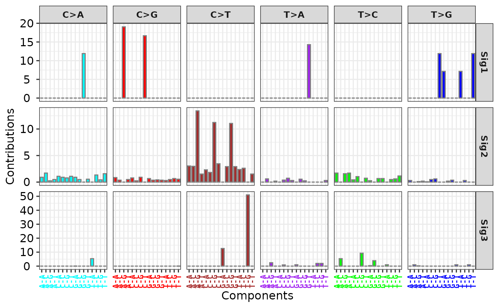
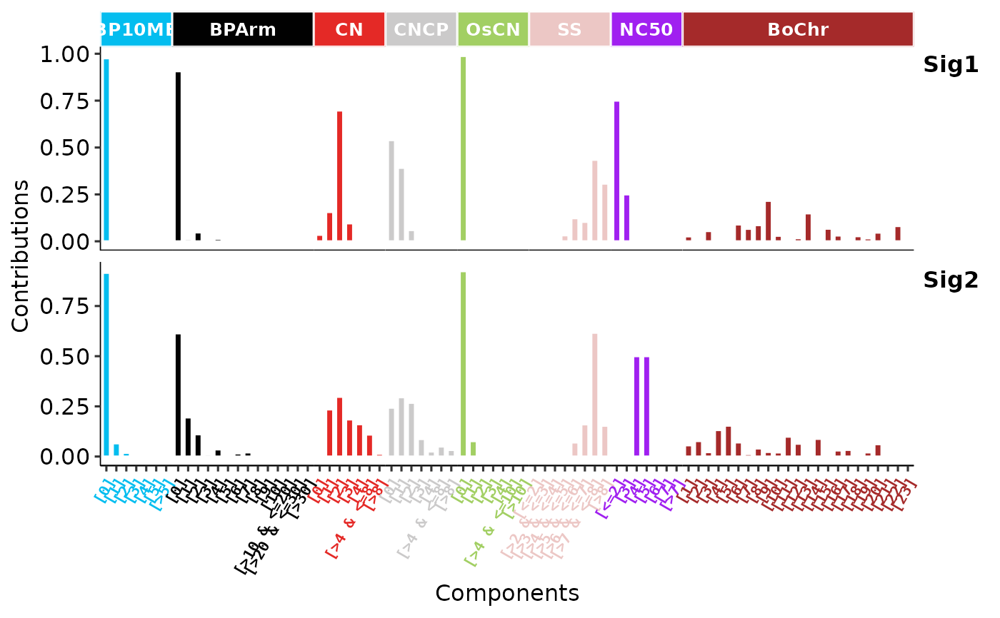
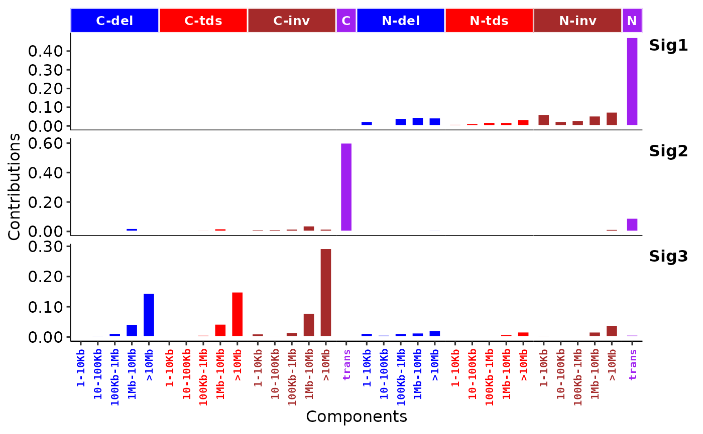

Who don't like to show a barplot for signature profile? This is for it.
show_sig_profile(
Signature,
mode = c("SBS", "copynumber", "DBS", "ID", "RS"),
method = "Wang",
by_context = FALSE,
normalize = c("row", "column", "raw", "feature"),
y_tr = NULL,
filters = NULL,
feature_setting = sigminer::CN.features,
style = c("default", "cosmic"),
palette = use_color_style(style, ifelse(by_context, "SBS", mode), method),
set_gradient_color = FALSE,
free_space = "free_x",
rm_panel_border = style == "cosmic",
rm_grid_line = style == "cosmic",
rm_axis_text = FALSE,
bar_border_color = ifelse(style == "default", "grey50", "white"),
bar_width = 0.7,
paint_axis_text = TRUE,
x_label_angle = ifelse(mode == "copynumber" & !(startsWith(method, "T") | method ==
"X"), 60, 90),
x_label_vjust = ifelse(mode == "copynumber" & !(startsWith(method, "T") | method ==
"X"), 1, 0.5),
x_label_hjust = 1,
x_lab = "Components",
y_lab = "auto",
y_limits = NULL,
params = NULL,
show_cv = FALSE,
params_label_size = 3,
params_label_angle = 60,
y_expand = 1,
digits = 2,
base_size = 12,
font_scale = 1,
sig_names = NULL,
sig_orders = NULL,
check_sig_names = TRUE
)a Signature object obtained either from sig_extract or sig_auto_extract,
or just a raw signature matrix with row representing components (motifs) and column
representing signatures (column names must start with 'Sig').
signature type for plotting, now supports 'copynumber', 'SBS', 'DBS', 'ID' and 'RS' (genome rearrangement signature).
method for copy number feature classification in sig_tally, can be one of "Wang" ("W"), "S".
for specific use.
one of 'row', 'column', 'raw' and "feature", for row normalization (signature), column normalization (component), raw data, row normalization by feature, respectively. Of note, 'feature' only works when the mode is 'copynumber'.
a function (e.g. log10) to transform y axis before plotting.
a pattern used to select components to plot.
a data.frame used for classification.
Only used when method is "Wang" ("W").
Default is CN.features. Users can also set custom input with "feature",
"min" and "max" columns available. Valid features can be printed by
unique(CN.features$feature).
plot style, one of 'default' and 'cosmic', works when
parameter set_gradient_color is FALSE.
palette used to plot when set_gradient_color is FALSE,
default use a built-in palette according to parameter style.
default is FALSE, if TRUE, use gradient colors
to fill bars.
default is 'free_x'. If "fixed", all panels have the same size. If "free_y" their height will be proportional to the length of the y scale; if "free_x" their width will be proportional to the length of the x scale; or if "free" both height and width will vary. This setting has no effect unless the appropriate scales also vary.
default is TRUE for style 'cosmic',
remove panel border to keep plot tight.
default is FALSE, if TRUE, remove grid lines of plot.
default is FALSE, if TRUE, remove component texts.
This is useful when multiple signature profiles are plotted together.
the color of bar border.
bar width. By default, set to 70% of the resolution of the data.
if TRUE, color on text of x axis.
font angle for x label.
font vjust for x label.
font hjust for x label.
x axis lab.
y axis lab.
limits to expand in y axis. e.g., 0.2, c(0, 0.3).
params data.frame of components, obtained from sig_tally.
default is FALSE, if TRUE, show coefficient of variation when
params is not NULL.
font size for params label.
font angle for params label.
y expand height for plotting params of copy number signatures.
digits for plotting params of copy number signatures.
overall font size.
a number used to set font scale.
subset signatures or set name of signatures, can be a character vector.
Default is NULL, prefix 'Sig' plus number is used.
set order of signatures, can be a character vector.
Default is NULL, the signatures are ordered by alphabetical order.
If an integer vector set, only specified signatures are plotted.
if TRUE, check signature names when input is
a matrix, i.e., all signatures (colnames) must start with 'Sig'.
a ggplot object
# \donttest{
# Load SBS signature
load(system.file("extdata", "toy_mutational_signature.RData",
package = "sigminer", mustWork = TRUE
))
# Show signature profile
p1 <- show_sig_profile(sig2, mode = "SBS")
p1
# Use 'y_tr' option to transform values in y axis
p11 <- show_sig_profile(sig2, mode = "SBS", y_tr = function(x) x * 100)
p11

# Load copy number signature from method "W"
load(system.file("extdata", "toy_copynumber_signature_by_W.RData",
package = "sigminer", mustWork = TRUE
))
# Show signature profile
p2 <- show_sig_profile(sig,
style = "cosmic",
mode = "copynumber",
method = "W",
normalize = "feature"
)
p2

# Visualize rearrangement signatures
s <- get_sig_db("RS_Nik_lab")
ss <- s$db[, 1:3]
colnames(ss) <- c("Sig1", "Sig2", "Sig3")
p3 <- show_sig_profile(ss, mode = "RS", style = "cosmic")
p3

# }